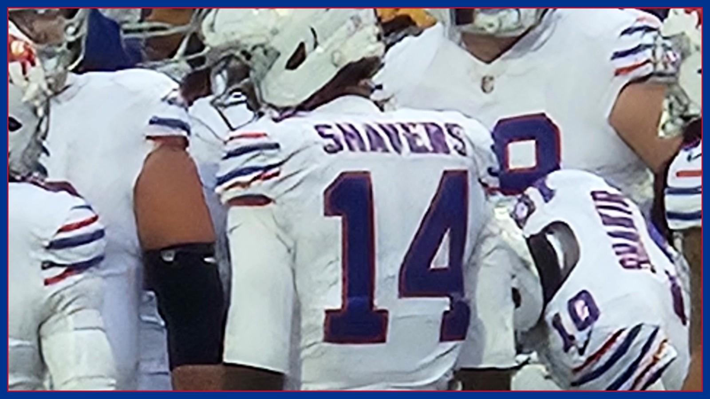

290 days after tearing his ACL in the playoffs, Tyrell Shavers is back on the 53.
The Bills activated Tyrell Shavers from the PUP list Wednesday, clearing the way for his season debut Sunday vs Miami, per the Democrat and Chronicle. He tore his ACL in the Jan. 11 wild-card win over Jacksonville — then played 21 more snaps on offense in the second half.

Tyrell Shavers is back on the Buffalo Bills' roster, and the date on the calendar is the whole story. The Bills activated Shavers from the physically unable to perform list on Wednesday, per the Democrat and Chronicle, clearing the way for his season debut when the Miami Dolphins (1-8) visit Highmark Stadium on Sunday, Nov. 22 at 1 PM ET. He tore his ACL in the playoffs on Jan. 11. He returned to practice on Oct. 28 — 290 days after suffering the injury, per the same reporting. Activation does not guarantee he suits up Sunday, per the Democrat and Chronicle. But after 290 days, the door is open, and the receiver Josh Allen calls one of his best teammates is standing in it.
To understand what 290 days cost him, you have to go back to the night it happened. Shavers tore his ACL on a special teams play — a punt return — in the second quarter of Buffalo's 27-24 wild-card victory over the Jacksonville Jaguars on Jan. 11, per the Democrat and Chronicle. Then he did the thing that still defines him in that building: he came back out for the second half and played 21 more snaps on offense, on the torn ACL, per ESPN's reporting. The Bills placed him on injured reserve three days later, ending his season. Most players would have been done for the night the moment the knee gave out. Shavers played a half of playoff football on it first.
The rehab that followed was a routine so fixed that general manager Brandon Beane could practically set his watch to it, per the Democrat and Chronicle: every morning around 6 a.m., Shavers was at the team's facility, preparing a saltwater bath, working his way back from the torn ACL. That is the unglamorous version of a comeback — no cameras, no countdown posts, just a 6 a.m. saltwater bath and ten months of mornings. He opened his 21-day practice window on Oct. 28, was a full participant for the past two weeks, per Rotowire, and the Bills had until Wednesday to add him to the 53-man roster or leave him on the PUP list for the rest of the season, per the Democrat and Chronicle. Tuesday, Buffalo placed rookie guard Ar'maj Reed-Adams on injured reserve, opening the roster spot. Wednesday, head coach Joe Brady announced Shavers was being activated, per Buffalo Rumblings. The deadline met the routine, right on time.
Shavers earned this return the slow way, and Buffalo fans who watched last season know the shape of it. He signed with the Bills as an undrafted free agent out of San Diego State in 2023 and spent his first two seasons primarily on the practice squad, per the Democrat and Chronicle. His first career catch was a 69-yard touchdown off a screen pass from Mitchell Trubisky in Week 17 of 2024 against the Jets. Last season he finally cracked the initial 53-man roster, appeared in all 17 regular-season games with nine starts, and finished with 15 receptions for 245 yards and one touchdown, per the Democrat and Chronicle — including his breakout against Tampa Bay in Week 11, four catches for 90 yards and a touchdown on a 43-yard pass from Josh Allen, per his career log. At 6-foot-4, he is the big-bodied receiver in a room built on quickness, and he contributes on special teams, where the injury found him. Nothing about his path was handed to him. The roster spot, the snaps, the breakout — all of it was earned in the margins.
What he walks back into is a receiver room that could use exactly what he brings, and a week that made that clearer. Wide receivers DJ Moore, Khalil Shakir and Keon Coleman sit ahead of him, per Rotowire, so Shavers figures to start as a depth option — but depth is doing real work in Buffalo right now. Tight end Dalton Kincaid, the team's leading receiver with 32 receptions for 497 yards and two touchdowns, per Heavy, did not practice Wednesday with a thumb injury on top of the ankle injury that limited him last week, per Pro Football Talk via Heavy — the thumb was picked up while catching two passes for 58 yards in Sunday's win over the Jets. Kincaid has appeared in all nine games this year, per Heavy, but Wednesday was a walkthrough estimate, not a ruling, and the Bills will not know what they have at tight end until the week's later reports. A 6-foot-4 receiver who blocks, plays special teams and already has Allen's trust is not a luxury in a week like that. It is insurance that can catch the ball.
The rest of Wednesday's report is the other half of Dolphins week, and it is the part this desk covered yesterday: cornerback Christian Benford (groin) and nickel cornerback Dee Alford (concussion) did not practice, per Pro Football Talk via Heavy, with safeties Cole Bishop (shoulder), Damar Hamlin (toe) and Amani Hooker (knee) limited, and linebacker Dorian Williams (calf) and right guard O'Cyrus Torrence (personal) also out. That is why the Tre'Davious White door stayed open in yesterday's column, and it stays open today. But Shavers is the other direction of the same week — the roster move that adds a player instead of subtracting one, on a Wednesday that mostly took them away.
Sunday will tell us how much of a role he gets, and this desk will not print a debut before the inactives do — about 90 minutes before the 1 PM ET kickoff. If he is in uniform, it will be against a 1-8 Dolphins team starting a quarterback making his second career start, in a game the 8-1 Bills are expected to control, which is as gentle a re-entry as the NFL ever offers. And if the moment is small — a few snaps, a block that springs a run, a special-teams rep — it will still be the end of 290 days that started with a torn ACL in a playoff game he refused to leave. He played the second half on it. He spent ten months earning his way back to the first half of the next one. Go Bills — and get every Dolphins-week practice report and roster move in your inbox every morning with The BNC Blitz.
The BNC Blitz is free: the day's Bills news, one stat that matters, and one take, every morning. Join to keep reading — and never miss the end of a story again.